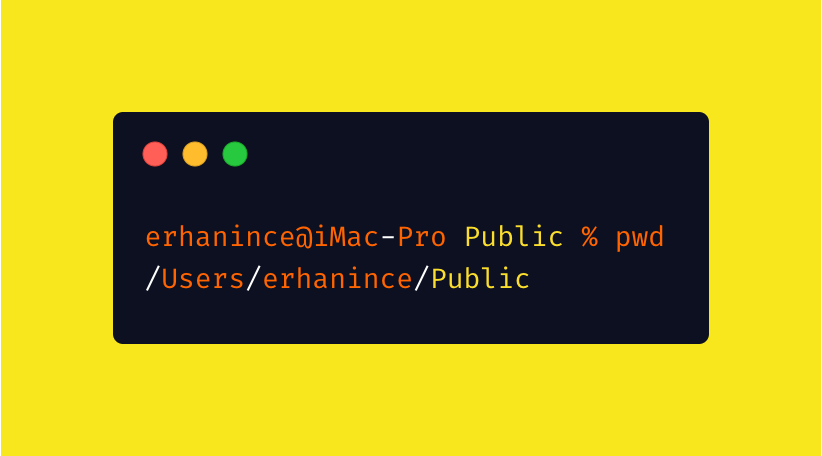
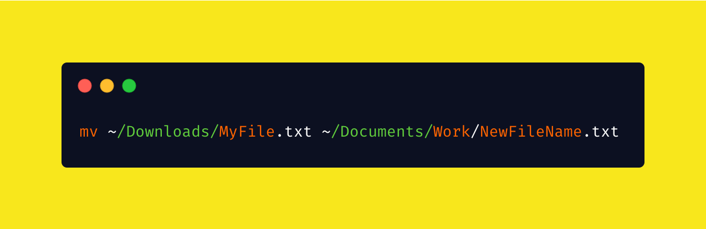
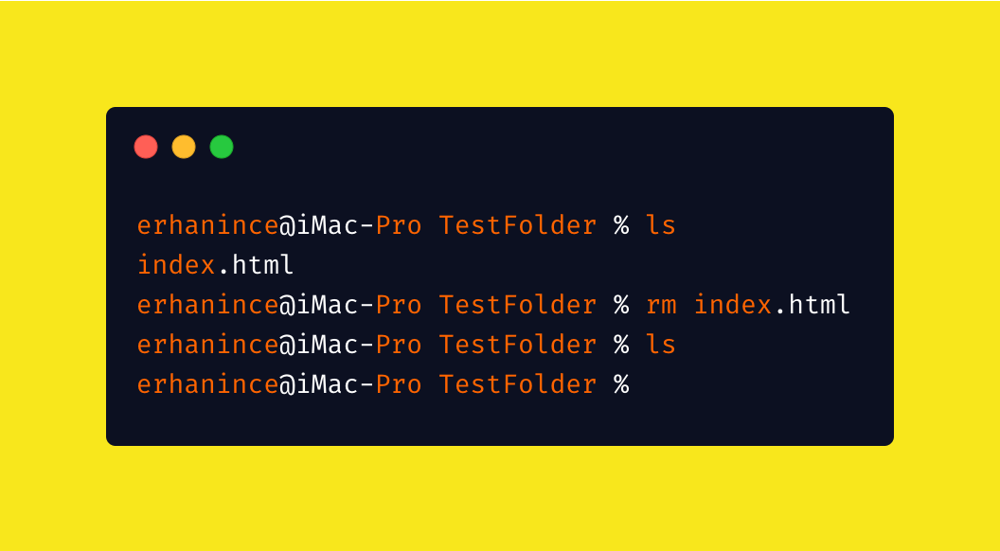

git init
Create empty Git repo in specified directory. Run with no arguments to initialize the current directory as a git repository
cd

cd wird genutzt um ein Pfad zu betreten
cd ..

cd .. wird genutzt um einen übergeordneten Pfad zu betreten
mkdir

mkdir erstellt einen neuen Ordner
ls

ls Listet alle Dateien in einem Ordner auf
touch

touch erstellt euch eine neue Datei
mv

mv verschiebt eure Datei lokal
mv-r
mv-r verschiebt und benennt die Datei um
rm
rm löscht eine Datei
rm-r

rm-r löscht ein ganzes Verzeichniss
cal

cal zeigt euch einen kalender an
exit

mit Exit verabschiedet man sich vom Terminal